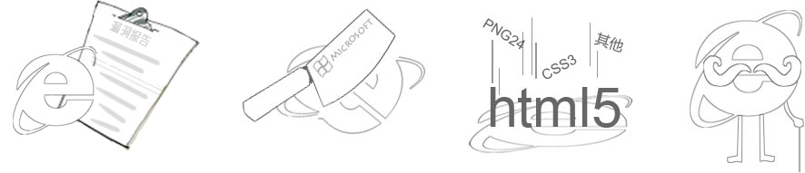

<div id="ie-lower">
	<div class="popup">
		<h3 style="text-align: center">很抱歉,您的浏览器过于老旧,无法完全支持我们的页面!</h3>
		<div>
			<h5 style="text-align: center">推荐浏览器(点击下载):</h5>
			<div class="bowsers">
				<a class="chrome" href="http://dlsw.baidu.com/sw-search-sp/soft/9d/14744/ChromeStandalone_47.0.2526.106_Setup.1450323126.exe"></a>
				<a class="ff" href="http://dlsw.baidu.com/sw-search-sp/soft/51/11843/Firefox_43.0.1.5828_setup.1450677885.exe"></a>
				<a class="sf" href="http://dlsw.baidu.com/sw-search-sp/soft/d3/12966/Safari_5.34.57.2.1417745549.exe"></a>
				<div style="clear:both"></div>
			</div>
		</div>
		<div class="why">
			<h5>为什么要升级浏览器? 
			<span>
			为了您的隐私和数据安全!
			</span>
			<span>
			为了让您得到更好的网上浏览体验!
			</span>
			</h5>
			
			<div class="reason">
				1. 存在严重安全漏洞
				<p>低版本IE中存在大量可供黑客用来攻击的漏洞,威胁您隐私和数据的安全.</p>
			</div>
			<div class="reason">
				2. 微软停止维护更新
				<p>微软在其安全研究和防御博客中指出,为了避免受到攻击的风险,用户最好能够升级IE浏览器.</p>
			</div>
			<div class="reason">
				3. 大量新特性不支持
				<p>低版本IE无法支持新技术,为了照顾它,我们不得不含泪抹杀掉新创意,新想法,新技术.</p>
			</div>
			<div class="reason last">
				4. 太老，太慢了
				<p>在这个软硬件飞速更新的时代,低版本IE的速度和效率极慢极低,在开发人员中已经久负盛名.</p>
			</div>
			<div style="clear:both"></div>
		</div>
		<div class="wheeler-dealer" onclick="document.getElementById('ie-lower').style.display='none';">
			知道了，但请还是打开页面 →
		</div>
	</div>
</div>
</body>
</html>